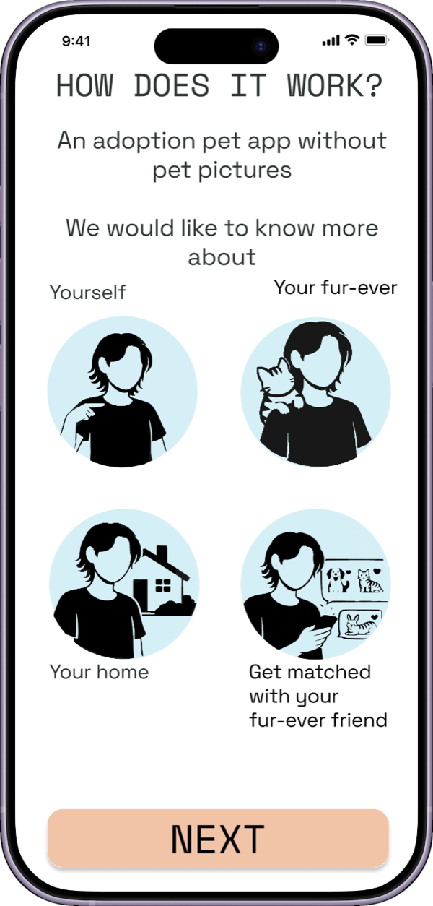
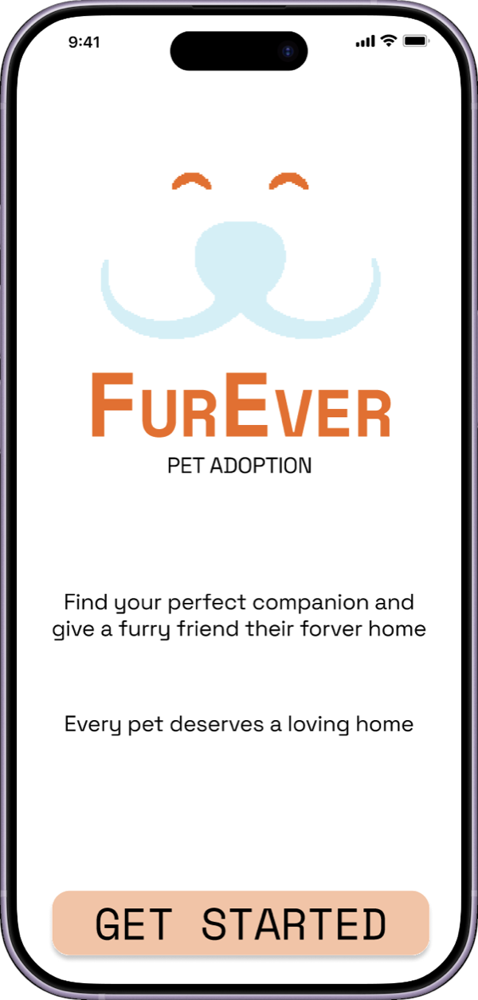
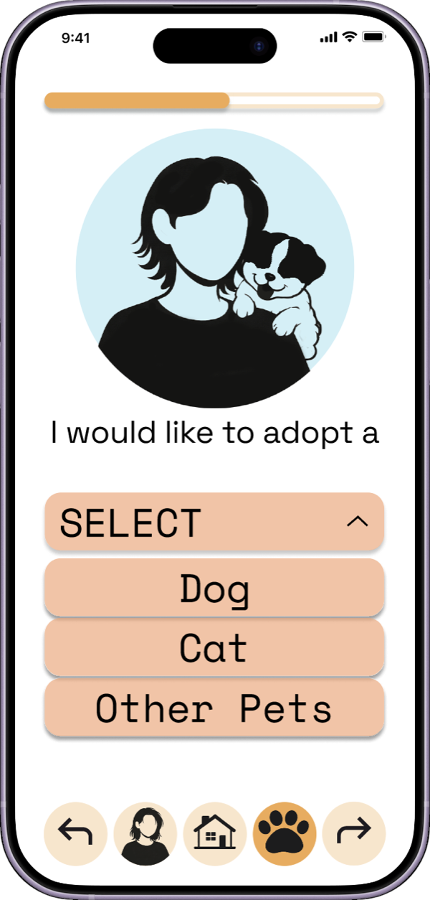
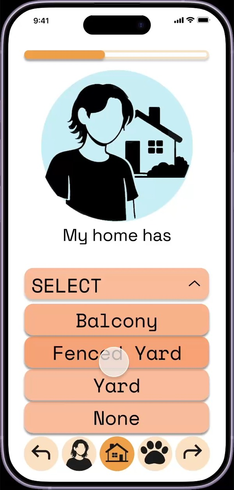
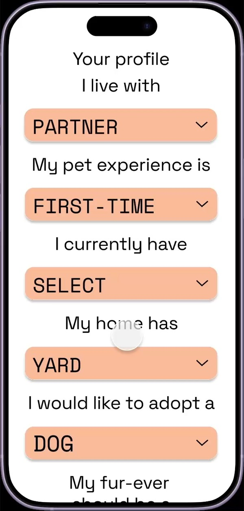
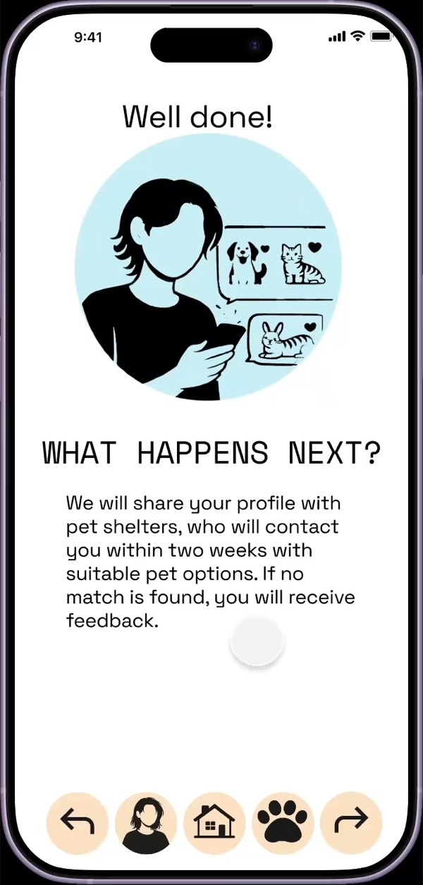

Case study — Digital product
Fur Ever
Adopters in Germany apply to shelter after shelter without knowing whether they are a fit for the animal. Shelters, meanwhile, lose animals to returns when the decision was made on a photograph. Fur Ever moves that decision earlier, matching adopters and animals on how they actually live.



The problem
Adoption platforms are built like marketplaces: a grid of photographs, a filter for size and breed, an enquiry button. An adopter falls for a face, applies, and finds out weeks later that the animal's needs do not match what they can offer.
Every application costs the shelter capacity, and leaves the adopter with a rejection and no explanation. In Germany the pressure is structural: the pandemic drove a wave of adoptions and purchases, and the years after it drove the returns. Overcrowding is bad for the animals, and it makes each individual one harder to see.
Interest in adopting never actually fell. Rehoming rates did — which points at a matching problem, not a demand problem.
350,000stray, abandoned and unwanted cats, dogs and other animals taken in by German shelters each year
2–6 monthsthe average stay for a dog admitted to a German shelter before it is adopted
User needs
Photographs set an expectation the process could not keep. People attached to an animal that was already gone, or that they were not eligible to adopt.
Shelters do not have the resources to keep listings current — so a large share of animals are simply never seen.
Repeat applications across separate sites, long silences, no feedback. Some people gave up and bought a pet, or adopted from abroad.
German platforms lag here. Usability is poor and almost none of them have a mobile app, where US and UK equivalents already do guided matching — Petfinder runs a quiz to narrow the field before anyone looks at a photo.
The question it turned on
How might we design a mobile solution that matches adopters and shelters effectively, without creating more operational burden on shelters?
Designing the match
Instead of adopters browsing animals, adopters build a profile and shelters propose the match. That moves the work to the side that already holds the matching knowledge, and it takes the photograph out of the first decision entirely.
The whole loop in sixteen seconds: the landing screen, three of the lifestyle questions — who you live with, what your home has, what you want to adopt — and the matched profile they produce. Not one of them asks about breed or looks.

Only the questions a shelter actually needs, as dropdowns. It limits the answers, but it keeps the form finishable — and long forms were the single loudest complaint in the interviews.

A review stage before anything is sent, and free movement between questions. People should be able to go back and change an answer rather than being marched down a linear flow.

The confirmation screen says what happens next, roughly when, and that you will hear back even if there is no match. Silence after applying was the thing people resented most.
What testing showed
8participants tested the prototype
87.5%found creating a profile very easy
The real test is with a shelter: whether a profile tells staff enough to make a match, and whether the system takes work off them instead of creating more.